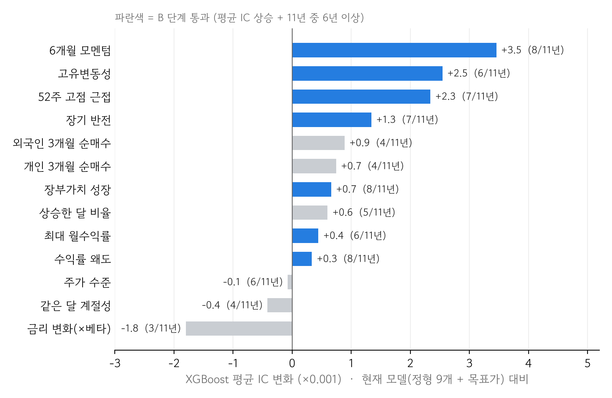
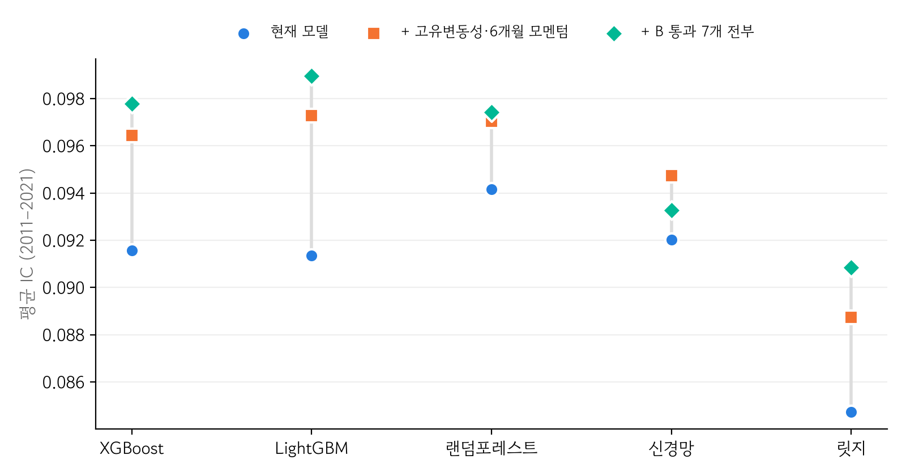

금융데이터인텔리전스 4팀2026. 11. 25
정형 피처 추가 검토
작성: 위영섭 · 판정 기준은 결과 보기 전에 git에 기록 (11/25 16:08, 기록/피처판정기준_1125.md)
한 장 요약
① 가진 데이터(교수님 기본 데이터, pykrx PBR·투자자 순매수, CD금리)로 새 피처 14개를 만들어 목표가 상향 때와 같은 판정 절차로 확인했다.
② 네 단계를 모두 통과한 것은 고유변동성 1개. 회귀(t −3.4)와 비선형 모델 4개에서 모두 IC를 올렸다.
③ 6개월 모멘텀, 52주 고점 근접, 장기 반전, 최대 월수익률, 장부가치 성장 5개는 모델 IC는 올리지만 회귀로는 설명되지 않는 '모델 보조 후보'.
④ 계절성, 상승 비율, 주가 수준, 개인·외국인 3개월 순매수, 왜도, 금리(거시) 변수는 제외.
⑤ 고유변동성 + 6개월 모멘텀을 더하면 XGBoost IC 0.0916 → 0.0964 (t 3.2, 11년 중 9년). 목표가 상향이 올린 폭(+0.0011)의 4배 이상. 다만 같은 기간으로 고르고 평가해서 2022년 이후 데이터로 다시 확인해야 한다.
⑥ 교수님 질문(상향 − 하향): 하향은 다음 달 효과가 없어(t −0.7) 순지표는 회귀 기준 미달(t 1.9). 상향만 쓰는 게 맞다.
1. 판정 기준 (목표가 상향과 같은 방식 + 모델 강건성 추가)
| 단계 | 기준 | 왜 |
|---|
| A1 회귀 | 정형 9개를 통제한 Fama-MacBeth, 2001–2021, |t| ≥ 2, 부호가 이론 방향과 같음 | 다른 변수로 설명되지 않는 자기만의 효과가 있는가 |
| A2 최근 | 2016–2021에도 같은 부호 | 예전에만 있던 효과가 아닌가 |
| B XGBoost | 현재 모델(정형 9개 + 목표가)에 더해서 평균 IC 상승 + 11년 중 6년 이상 상승 | 실제 예측력이 오르는가 |
| C 강건성 (새로 추가) | 비선형 4개(XGBoost, LightGBM, 랜덤포레스트, 신경망) 중 3개 이상에서 평균 IC 상승 | 목표가 상향이 모델에 따라 흔들렸던 경험을 반영 |
| 최종 | 전부 통과 = 채택 · B와 C만 = 모델 보조 후보 · 그 외 = 제외 |
2. 쓸 수 있는 데이터
| 데이터 | 들어 있는 것 | 만들 수 있는 피처 |
|---|
| 교수님 기본 데이터 | 월 수익률, 종가, 상장주식수, 시가총액, 종목명·코드 | 모멘텀 변형, 반전, 52주 고점, 최대 수익률, 왜도, 계절성, 주가 수준, 고유변동성 |
| pykrx (팀이 받은 것) | PBR·BPS, 개인·외국인 순매수 금액 | 순매수 누적, 장부가치 성장 |
| CD 91일 금리 | 월별 금리 (모든 종목에 같은 값) | 금리 변화 × 베타·규모 (상호작용으로만 의미) |
| 없는 것 | 거래량·거래대금, 업종 분류, 재무제표(이익·자산), 일별 가격 → 6장 아이디어로 정리. 이 환경에서는 KRX·DART 접속이 막혀 직접 받지 못함 |
거시 변수 한계: 금리처럼 그달 모든 종목에 같은 값은 종목 순위를 바꾸지 못한다. 그래서 "금리가 오를 때 고베타 종목이 덜 오르나"처럼 다른 변수와 곱해서만 의미가 있다.
3. 후보 피처 14개
| 피처 | 계산 (모두 그달 말까지 정보) | 방향 | 근거 논문 |
|---|
| 6개월 모멘텀 | 최근 6개월 누적 수익률 (이번 달 제외) | + | Jegadeesh & Titman (1993), JF |
| 장기 반전 | 13~36개월 전 누적 수익률 | − | De Bondt & Thaler (1985), JF |
| 52주 고점 근접 | 수익률 지수 / 최근 12개월 최고치 | + | George & Hwang (2004), JF |
| 최대 월수익률 | 최근 12개월 중 가장 높은 월수익률 | − | Bali, Cakici & Whitelaw (2011), JFE |
| 수익률 왜도 | 최근 12개월 월수익률의 왜도 | − | Boyer, Mitton & Vorkink (2010), RFS |
| 같은 달 계절성 | 1~5년 전 같은 달 수익률 평균 | + | Heston & Sadka (2008), JFE |
| 상승한 달 비율 | 최근 12개월 중 오른 달 비율 | + | Da, Gurun & Warachka (2014), RFS |
| 주가 수준 | log(종가) | + | Kumar (2009), JF 복권형 주식 |
| 고유변동성 | 24개월 시장모형 잔차의 표준편차 | − | Ang, Hodrick, Xing & Zhang (2006), JF |
| 개인 3개월 순매수 | 최근 3개월 개인 순매수 / 시총 합 | − | Barber & Odean (2008), RFS |
| 외국인 3개월 순매수 | 최근 3개월 외국인 순매수 / 시총 합 | ± | Choe, Kho & Stulz (2005), RFS |
| 장부가치 성장 | BPS × 주식수의 12개월 증가율 | − | Cooper, Gulen & Schill (2008), JF |
| 금리 변화 × 베타 | CD금리 3개월 변화, 베타 효과와의 관계 | ± | Frazzini & Pedersen (2014), JFE |
| 금리 변화 × 규모 | 같은 방식, 규모 효과와의 관계 | ± | - |
4. 판정 결과
B 단계: XGBoost에 하나씩 더했을 때 IC 변화

전체 판정표
| 피처 | A1 회귀 t | A2 | B XGBoost | C 다른 모델 (IC 변화 ×0.001) | 판정 |
|---|
| 고유변동성 | −3.4 ✓ | ✓ | +2.5, 6년 ✓ | LGBM +3.0 · RF +3.1 · 신경망 +1.7 → 4/4 ✓ | 채택 |
| 6개월 모멘텀 | −1.5 (반대 부호) | ✓ | +3.5, 8년 ✓ | LGBM +2.9 · RF +0.1 · 신경망 +1.3 → 4/4 ✓ | 모델 보조 |
| 52주 고점 근접 | 1.0 | ✓ | +2.3, 7년 ✓ | +1.3 · +0.8 · +2.0 → 4/4 ✓ | 모델 보조 |
| 장기 반전 | 0.6 (반대 부호) | ✗ | +1.3, 7년 ✓ | +0.7 · +0.7 · +1.4 → 4/4 ✓ | 모델 보조 |
| 최대 월수익률 | −0.6 | ✓ | +0.4, 6년 ✓ | +0.8 · +0.5 · +1.6 → 4/4 ✓ | 모델 보조 |
| 장부가치 성장 | 0.1 | ✗ | +0.7, 8년 ✓ | +2.2 · +0.4 · +1.5 → 4/4 ✓ | 모델 보조 |
| 수익률 왜도 | −1.5 | ✓ | +0.3, 8년 ✓ | +0.9 · −0.1 · −0.8 → 2/4 | 제외 |
| 외국인 3개월 순매수 | −0.8 | ✗ | +0.9, 4년 ✗ | - | 제외 |
| 개인 3개월 순매수 | −0.3 | ✓ | +0.7, 4년 ✗ | - | 제외 |
| 상승한 달 비율 | 0.1 | ✓ | +0.6, 5년 ✗ | - | 제외 |
| 주가 수준 | −1.0 (반대 부호) | ✓ | −0.1 ✗ | - | 제외 |
| 같은 달 계절성 | 0.9 | ✓ | −0.4 ✗ | - | 제외 |
| 금리 변화 × 베타 | −1.1 | ✗ | −1.8 ✗ | - | 제외 |
| 금리 변화 × 규모 | 0.4 | ✗ | - | - | 제외 |
읽을 때 주의
· C 기준(평균이 조금이라도 오르면 통과)은 생각보다 느슨했다. 여러 모델에서 t 2를 넘은 것은 고유변동성뿐이고(XGBoost 2.6, LightGBM 2.8, 랜덤포레스트 2.1), 나머지 '모델 보조' 피처는 대부분 t 1 안팎이다.
· 고유변동성과 6개월 모멘텀은 기존 변수의 다른 버전이다(총변동성, 12–2개월 모멘텀). 완전히 새로운 정보라기보다 기존 변수를 더 정확히 재는 쪽에 가깝다.
· 6개월 모멘텀은 회귀에서는 오히려 음수(한국 시장의 단기 반전과 섞임)인데 모델에서는 IC를 올린다. 기존 모멘텀과 같이 쓸 때 구간별로 작동하는 비선형 효과로 보인다.
5. 여러 개를 한꺼번에 넣으면

| 모델 | 현재 | + 고유변동성·6개월 모멘텀 | + B 통과 7개 전부 |
|---|
| XGBoost | 0.0916 | 0.0964 (t 3.2, 9/11년) | 0.0978 (t 3.1, 8/11년) |
| LightGBM | 0.0913 | 0.0973 (t 3.8, 10/11년) | 0.0990 (t 3.8, 10/11년) |
| 랜덤포레스트 | 0.0942 | 0.0970 (t 2.0, 7/11년) | 0.0974 (t 2.0, 7/11년) |
| 신경망 | 0.0920 | 0.0947 (t 0.9, 8/11년) | 0.0933 (t 0.4, 6/11년) |
| 릿지 (선형) | 0.0847 | 0.0887 (t 2.9, 10/11년) | 0.0908 (t 3.0, 9/11년) |
선택 편향 주의: 피처를 고른 기간(2011–2021)과 성능을 잰 기간이 같다. 14개 중 잘 나온 것만 골랐으니 성능이 실제보다 좋게 보일 수 있다. 그래서 ① 2022년 이후 데이터로 다시 확인하거나, ② 2011–2016으로 고르고 2017–2021로 확인하는 단계를 거친 뒤에 최종 모델에 넣어야 한다. 그 전까지는 "후보"로만 부른다.
6. 교수님 질문: 목표가 상향 − 하향 순지표
| 변수 | 회귀 (통제 후) | 2016–21 | XGBoost IC (정형 9개 0.0905 대비) |
|---|
| 상향만 (현재) | +0.51%p, t 2.5 ✓ | +0.47 | 0.0916 (+0.0010, 7/11년) |
| 하향만 | −0.24%p, t −0.7 ✗ | +0.02 | - |
| 순지표 (상향 − 하향) | +0.32%p, t 1.9 ✗ | +0.17 | 0.0919 (+0.0013, 9/11년) |
| 상향 + 하향 따로 | 상향 t 2.7 / 하향 t −0.7 | - | 0.0911 (+0.0006, 8/11년) |
하향 기사는 다음 달까지 효과가 남지 않는다(테마 스크리닝 결과와 같음). 순지표는 모델 IC가 약간 높지만 회귀 기준(t 2)을 못 넘어, 판정 기준대로 상향만을 본 변수로 유지한다. 교수님께는 "하향도 확인했는데 다음 달 효과가 없어 상향만 쓴다"로 답한다.
7. 새로 가져올 만한 피처 아이디어 (외부 데이터)
지금 환경에서는 KRX·DART 사이트 접속이 막혀 있어 직접 돌리지 못했다. 팀원 PC에서 pykrx·OpenDART로 받을 수 있는 것 위주로, 선행연구가 있는 것만 골랐다. 우선순위는 기대 효과와 준비 난이도를 같이 본 것이다.
① 주가·거래 데이터 (pykrx로 받기 쉬움)
| # | 피처 | 계산 | 방향 | 근거 논문 | 우선 |
|---|
| 1 | 거래회전율 | 월 거래량 / 상장주식수 | − | Datar, Naik & Radcliffe (1998), J. Financial Markets | ★★★ |
| 2 | 아미후드 비유동성 | |일 수익률| / 거래대금의 월평균 | + | Amihud (2002), J. Financial Markets | ★★★ |
| 3 | 거래량 급증 | 이번 달 거래량 / 직전 12개월 평균 | + | Gervais, Kaniel & Mingelgrin (2001), JF | ★★ |
| 4 | 일별 최대 수익률 (MAX) | 그달 일 수익률 중 최대 | − | Bali, Cakici & Whitelaw (2011), JFE | ★★★ |
| 5 | 일별 고유변동성 | 그달 일 수익률의 시장모형 잔차 표준편차 | − | Ang, Hodrick, Xing & Zhang (2006), JF | ★★★ |
| 6 | 52주 신고가 근접도 (일별) | 종가 / 52주 최고가 | + | George & Hwang (2004), JF | ★★ |
| 7 | 정보 이산성 | 12개월 중 오른 날 비율 − 내린 날 비율 × 모멘텀 부호 | + | Da, Gurun & Warachka (2014), RFS | ★★ |
| 8 | 외국인 보유율 변화 | 외국인 지분율 3개월 변화 | ± | Choe, Kho & Stulz (2005), RFS | ★★★ |
| 9 | 기관 순매수 | 기관 순매수 / 시총 (3개월) | + | Nofsinger & Sias (1999), JF | ★★ |
| 10 | 공매도 잔고 비율 | 공매도 잔고 / 상장주식수 | − | Boehmer, Jones & Zhang (2008), JF | ★★ (2016년 이후만) |
| 11 | 업종 모멘텀 | 같은 업종 종목의 12–2개월 평균 수익률 | + | Moskowitz & Grinblatt (1999), JF | ★★★ |
| 12 | 잔차 모멘텀 | 시장·업종 영향을 뺀 12–2개월 수익률 | + | Blitz, Huij & Martens (2011), J. Empirical Finance | ★★★ |
| 13 | 업종 대비 변동성·가치 | 변동성·B/M을 업종 안 순위로 | 원 변수와 같음 | Asness, Porter & Stevens (2000) 업종 조정 가치 | ★★ |
| 14 | 지수 편입·편출 | 코스피200 정기 변경 편입 1 / 편출 −1 | + | Shleifer (1986), JF | ★ |
| 15 | 주간 단기 반전 | 그달 마지막 주 수익률 | − | Lehmann (1990), QJE | ★★ |
② 재무제표·공시 데이터 (OpenDART)
| # | 피처 | 계산 | 방향 | 근거 논문 | 우선 |
|---|
| 16 | 매출총이익 / 자산 (수익성) | (매출 − 매출원가) / 총자산 | + | Novy-Marx (2013), JFE | ★★★ |
| 17 | ROE | 순이익 / 자본 | + | Hou, Xue & Zhang (2015), RFS | ★★★ |
| 18 | 이익 서프라이즈 (SUE) | (이번 분기 EPS − 1년 전 같은 분기) / 표준편차 | + | Bernard & Thomas (1989), J. Accounting Research | ★★★ |
| 19 | 발생액 | (순이익 − 영업현금흐름) / 총자산 | − | Sloan (1996), The Accounting Review | ★★ |
| 20 | 자산 성장률 | 총자산 1년 증가율 | − | Cooper, Gulen & Schill (2008), JF | ★★ |
| 21 | 투자 (CAPEX) | 설비투자 / 총자산 | − | Titman, Wei & Xie (2004), JFQA | ★ |
| 22 | F-score | 수익성·재무건전성·효율성 9개 신호 합 | + | Piotroski (2000), J. Accounting Research | ★★ |
| 23 | E/P, CF/P | 순이익·영업현금흐름 / 시총 | + | Basu (1977), JF; Lakonishok, Shleifer & Vishny (1994), JF | ★★ |
| 24 | R&D 비율 | 연구개발비 / 매출 | + | Chan, Lakonishok & Sougiannis (2001), JF | ★ |
| 25 | 자사주 매입 공시 | 그달 자사주 취득 결정 공시 1/0 | + | Ikenberry, Lakonishok & Vermaelen (1995), JFE | ★★ |
| 26 | 유상증자 공시 | 그달 유상증자 결정 공시 1/0 | − | Loughran & Ritter (1995), JF | ★★ |
| 27 | 내부자 매수 | 임원·주요주주 순매수 공시 | + | Lakonishok & Lee (2001), RFS | ★★ |
| 28 | 배당 개시·증가 | 배당 결정 공시에서 증가 1 | + | Michaely, Thaler & Womack (1995), JF | ★ |
| 29 | 사업보고서 문장 변화 | 전년 보고서와의 문장 유사도 | − (변화 클수록) | Cohen, Malloy & Nguyen (2020), JF "Lazy Prices" | ★ |
| 30 | 공시 불확실성 단어 비율 | 불확실성 단어 / 전체 단어 | − | Loughran & McDonald (2011), JF | ★ |
③ 거시 변수 (상호작용으로만 의미)
| # | 피처 | 쓰는 법 | 근거 |
|---|
| 31 | VKOSPI(변동성지수) × 베타 | 시장 불안할 때 고베타 주식 효과가 달라지는지 | Frazzini & Pedersen (2014), JFE |
| 32 | 원/달러 환율 변화 × 외국인 지분율 | 환율 급변 때 외국인 많은 종목의 반응 | - |
| 33 | 신용 스프레드 × 규모 | 신용 경색 때 소형주 약세 | - |
추천 순서: ① 업종 분류만 받으면 바로 만들 수 있는 업종 모멘텀·잔차 모멘텀·업종 대비 변동성(팀 논의 아이디어와 같음) → ② pykrx 거래량으로 회전율·아미후드·외국인 보유율 변화 (다른 팀도 거래량·외국인 보유량으로 성능이 올랐다고 함) → ③ DART 수익성(GP/A)·SUE. 거시 변수는 순위 예측에서는 상호작용으로만 의미가 있어 우선순위를 낮춤.
8. 앞으로의 판정 방향
- 새 피처도 같은 4단계 기준(회귀 → 최근 → XGBoost → 다른 모델)을 결과 보기 전에 적고 돌린다.
- 확인용 기간을 따로 둔다: 2011–2016으로 고르고 2017–2021로 확인. 최종은 2022년 이후.
- 기존 변수의 변형인지 표시한다. 고유변동성처럼 기존 변수를 대체하는 경우, 바꿀지 같이 쓸지를 따로 정한다.
- 우선순위: 고유변동성(채택) → 업종 분류를 받아 업종 모멘텀·잔차 모멘텀 → pykrx 거래량으로 회전율·비유동성 → DART 수익성·이익 서프라이즈.
- 목표가 상향은 본 가설 변수로 유지(회귀 t 2.5)하고, 정형 피처는 모델 성능용으로 구분해서 보고한다.
코드: 연습장/yw_run/feat_build_yw.py, feat_screen_yw.py, feat_robust_yw.py, tp_net_yw.py · 결과: 연습장/out_yw/feat_screen.csv, feat_robust.csv, feat_bundle.csv, tp_net_*.csv · 데이터는 v2 이전 정형 데이터(처음 결과와 같음)